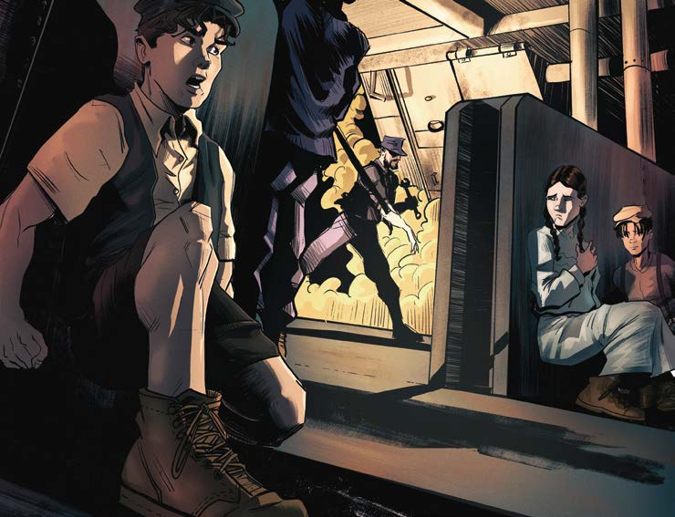

Siempre decía que algo en la vida real puede parecer inverosímil, pero no lo es, y que en una tragedia debe exagerarse para que el público dimensione cabalmente el drama.
—Tu hermana padece de anemia, o algo así, y el desmayo es índice de que ha habido un descenso de los glóbulos rojos.